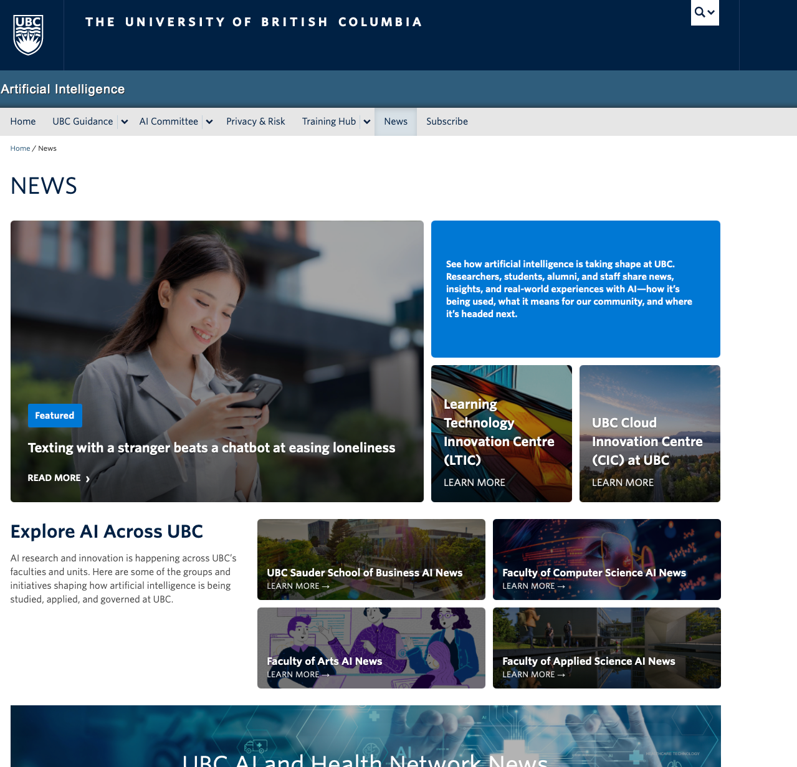
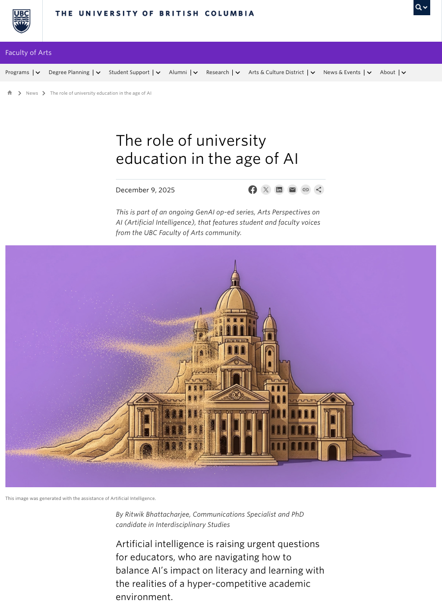
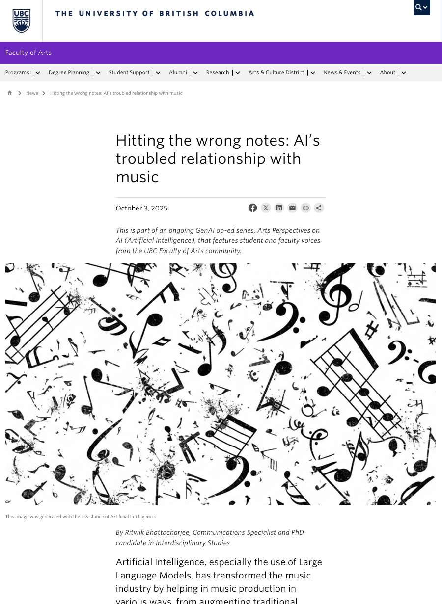
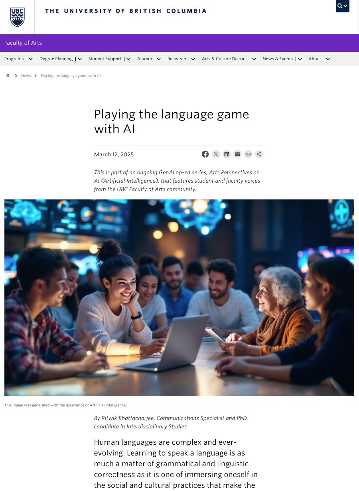
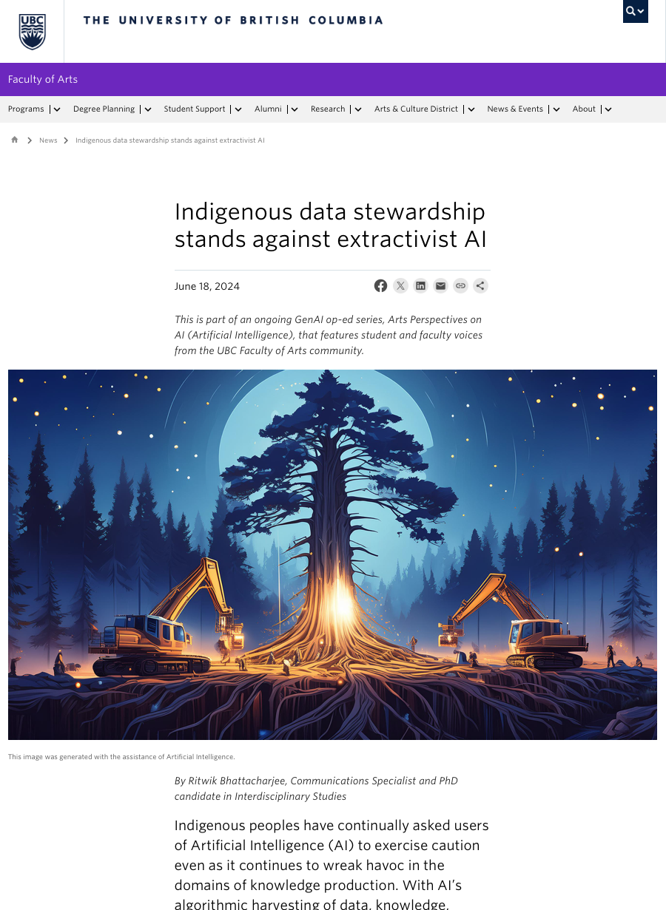
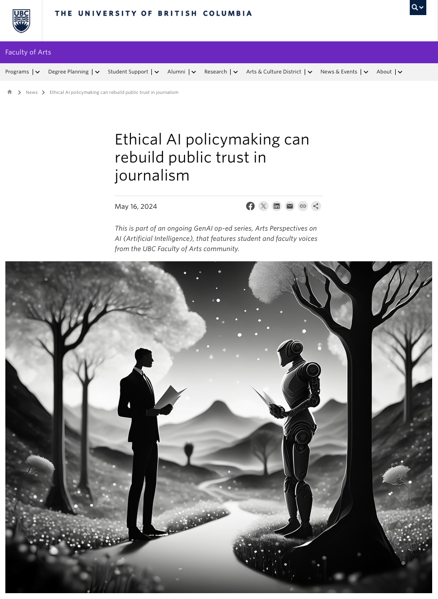
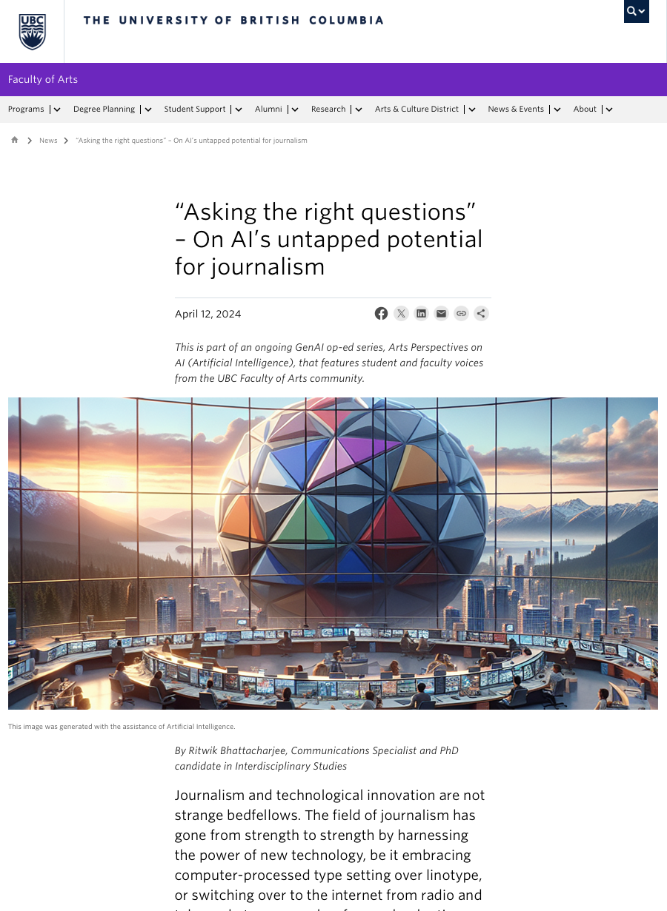

Saskia Tholen
UBC Arts alumna · University education in the age of AI
Flagship Case Study
A strategic thought leadership initiative that positioned UBC Faculty of Arts experts as public voices on the societal implications of generative AI.
Executive Summary
I developed Arts Perspectives on AI as a strategic editorial platform that translated UBC Arts expertise into accessible, timely and public-facing stories. The series created a coherent Faculty voice on AI, earned institutional amplification, and generated recognition beyond its original publication channel.
Strategic Insight
Rather than treating generative AI as a narrow technology issue, the series framed it as a public question spanning education, journalism, music, language, policy and Indigenous data sovereignty. That editorial framing allowed the Faculty of Arts to enter a crowded AI conversation with relevance, credibility and disciplinary range.
The communications goal was to create a repeatable editorial platform: one that could identify timely issues, surface expert voices, translate specialized knowledge, and produce stories strong enough to travel across institutional and external channels.
Expert Perspectives
UBC Arts alumna · University education in the age of AI
AI, creativity and music
Large language models and human language
Indigenous data sovereignty and extractive AI
AI governance, journalism and public trust
AI's untapped potential for journalism
Editorial Framework
Identify AI questions with public relevance and Faculty expertise.
Connect story angles to faculty and alumni perspectives across disciplines.
Surface clear arguments, examples and public-facing explanations.
Translate complex research into accessible feature stories.
Manage editorial review, publication and cross-channel visibility.
Proof of Work







Results
Communications Leadership
Lessons Learned
The series showed that institutional communications can shape public understanding when it begins with the right strategic question, identifies credible expert voices, and translates specialized knowledge into narratives that audiences can use.